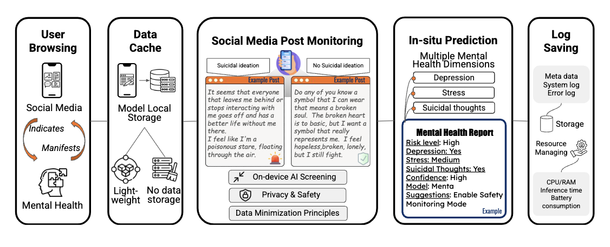
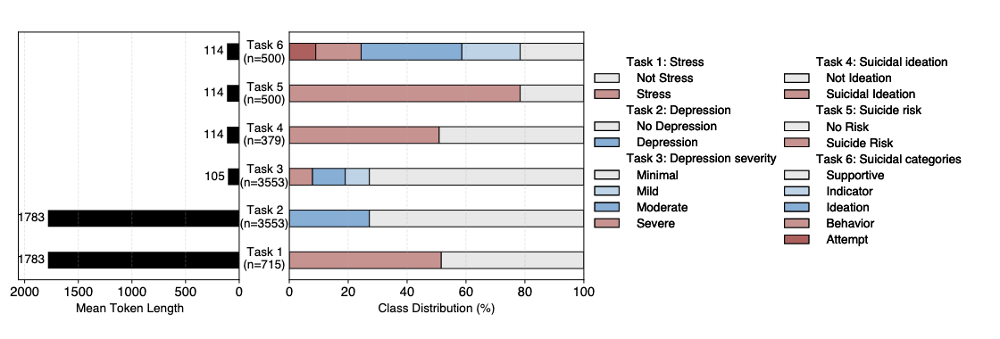

Abstract
Mental health conditions affect hundreds of millions globally, yet early detection remains limited. While large language models (LLMs) have shown promise in mental health applications, their size and computational demands hinder practical deployment. Small language models (SLMs) offer a lightweight alternative, but their use for social media–based mental health prediction remains largely underexplored. In this study, we introduce Menta, the first optimized SLM fine-tuned specifically for multi-task mental health prediction from social media data. Menta is jointly trained across six classification tasks using a LoRA-based framework, a cross-dataset strategy, and a balanced accuracy–oriented loss. Evaluated against nine state-of-the-art SLM baselines, Menta achieves an average improvement of 15.2% across tasks covering depression, stress, and suicidality compared with the best-performing non–fine-tuned SLMs. It also achieves higher accuracy on depression and stress classification tasks compared to 13B-parameter LLMs, while being approximately 3.25× smaller. Moreover, we demonstrate real-time, on-device deployment of Menta on an iPhone 15 Pro Max, requiring only approximately 3GB RAM. Supported by a comprehensive benchmark against existing SLMs and LLMs, Menta highlights the potential for scalable, privacy-preserving mental health monitoring. 
1. Overview
Menta is a small language model for digital mental health prediction from social media text. Instead of relying on large server-side LLMs, Menta focuses on early screening of stress, depression, and suicidality in a way that is lightweight enough to run fully on consumer devices such as smartphones.
The model is jointly trained on six Reddit-based classification tasks that cover stress, depression severity, suicidal ideation, and suicide risk categories. This multi-task setup encourages shared representations across related conditions while preserving task-specific decision boundaries.
- 4B-parameter small language model with a Qwen-style backbone.
- Six mental health classification tasks collected from expert-annotated Reddit corpora.
- LoRA-based multi-task fine-tuning for efficient adaptation.
- Balanced-accuracy–aware optimization to handle imbalanced labels.
- Demonstrated real-time on-device deployment for privacy-preserving mental health screening.
2. Model and Training
Menta is built on top of a 4B-parameter transformer-based small language model and fine-tuned with parameter-efficient LoRA adapters for multi-task mental health prediction. The base model remains mostly frozen while LoRA layers capture task-specific adaptations.
The training pipeline uses a shared transformer backbone with task-specific classification heads. LoRA adapters are inserted into attention projections (e.g., query and value matrices), enabling effective fine-tuning while updating only a small fraction of the total parameters.
- Parameter-efficient tuning. Only LoRA parameters and classifier heads are trained; base model weights are frozen, substantially reducing GPU memory requirements.
- Task sampling. A task-level sampling strategy mitigates dataset size imbalance, preventing large datasets from dominating the multi-task objective.
- Class imbalance handling. Class-weighted cross-entropy and a balanced-accuracy–aware term are combined to encourage robust performance on minority classes.
- Joint optimization. All six tasks are optimized in a single training run, encouraging the model to share knowledge across stress, depression, and suicidality detection.
3. Evaluation and Results
We compare Menta against a range of baselines, including zero-shot and few-shot prompting with general-purpose small language models, as well as larger mental-health–tuned LLMs.
- Menta consistently outperforms non-fine-tuned small language models on all six tasks, demonstrating the value of dedicated mental-health fine-tuning.
- On depression and stress prediction, Menta achieves performance that is competitive with or superior to 13B-parameter mental-health–tuned LLMs, despite being substantially smaller.
- The 4B model is much more suitable for on-device deployment than 13B LLMs in terms of both memory footprint and latency.

4. Datasets
Menta is trained and evaluated on four expert-annotated Reddit corpora, organized into six classification tasks that cover stress, depression, suicidal ideation, and suicide risk.
| Task | Dataset | Label type |
|---|---|---|
| Task 1 | Dreaddit | Stress vs. non-stress |
| Task 2–3 | Depression severity dataset | Binary depression + multi-level severity |
| Task 4 | SDCNL | Suicidal ideation vs. non-ideation |
| Task 5–6 | CSSRS-based suicide risk dataset | Binary risk + multi-level risk categories |

5. On-Device Deployment
We deploy Menta on mobile devices using a lightweight inference stack with quantized weights. The goal is to enable privacy-preserving, real-time mental health screening directly on user devices without uploading raw text to remote servers.
- 4-bit GGUF quantization to reduce memory footprint while maintaining task performance.
-
Inference via
llama.cppor a similar engine with Metal acceleration on iOS. - Demonstrated deployment on an iPhone 15 Pro Max with interactive-level latency and moderate memory usage.
- All processing stays on device, which reduces privacy risks for sensitive mental-health texts.


6. Implementation and Resources
The full training and evaluation code, together with instructions for reproducing our experiments and running Menta on mobile devices, is available in the GitHub repository. Pre-trained weights and configuration files for different quantization levels are hosted on Hugging Face.
- GitHub: end-to-end training, evaluation, and on-device demo code.
- Hugging Face: model checkpoints and configuration files.
- Mobile demo: a reference iOS application showing multi-task predictions for stress, depression, and suicidality from example posts.